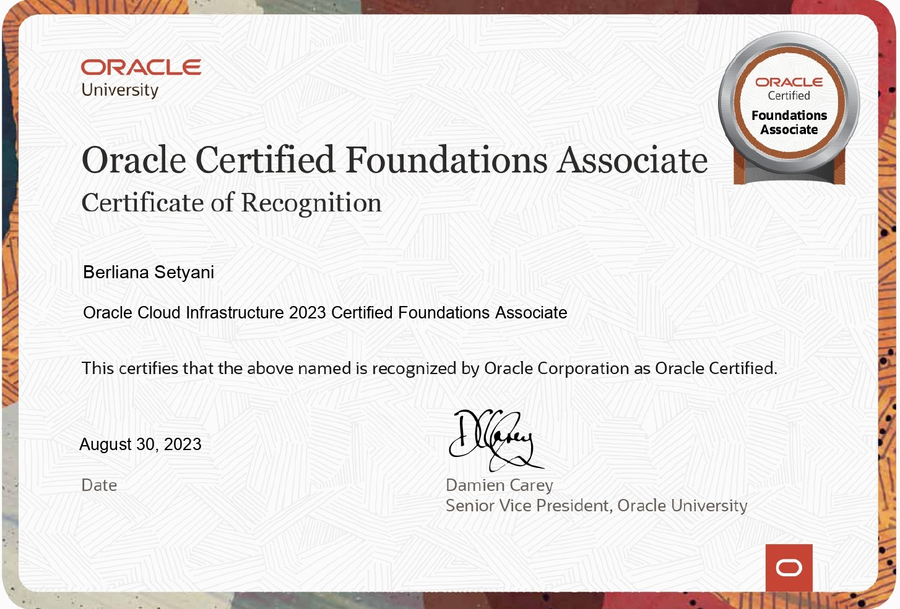
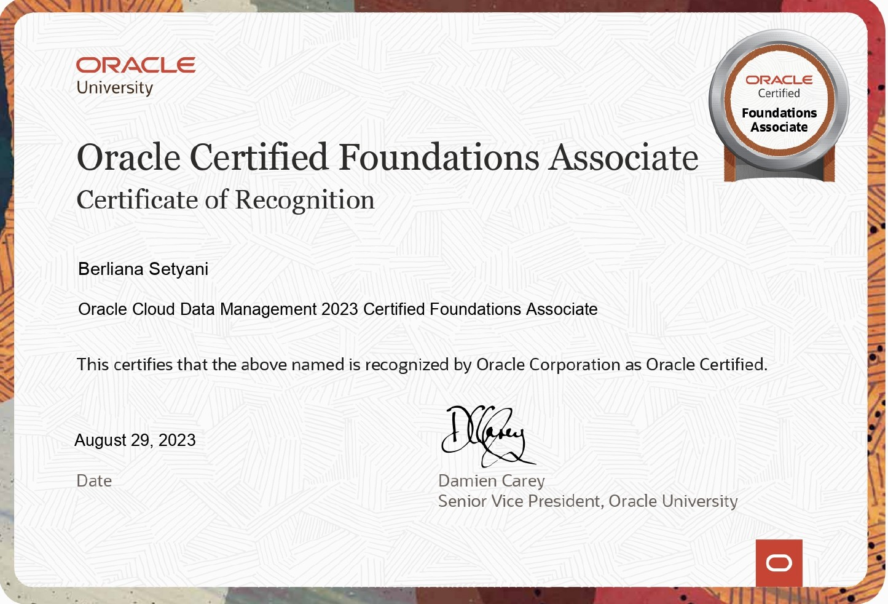

Fraud Investigation System is designed to combat threats with intelligent detection tools, real-time transaction monitoring, and a risk-based scoring system.
Fraud Investigation System
Backend Developer with 2 years of experience in the management, development, and enhancement of high-performance applications using a variety of programming languages including Java, Spring Boot, Python, React, and Node.Js. Work well with a team or individually using Agile methodology.
I'm a real go-getter, always striving to achieve my goals. I'm a big believer in not putting things off and always make sure my work is neatly organised. I am a quick learner and I'm always adapting to new things. I really enjoy working in quiet and comfortable environments, and I find that I work best with people I get on with.
I'm currently working at PT Desacode, which is great! I'm also a student at Asia Cyber University, I'm studying Informatics, which I'm really enjoying! I'm delighted to say that I graduated from SMK Wikrama Bogor with a degree in software engineering. I had the opportunity to complete an internship at PT Bank Mega, which was a fantastic six months.
I'm thrilled to share the exciting news that I graduated from SMK Wikrama Bogor in 2023 with a major in Software Engineering! When I was at school, I had the chance to work on some really interesting projects using Laravel. I worked on a student attendance system, an online hotel reservation platform, and a village-level community complaint website.
During my internship at PT Bank Mega (June – December 2022), I had the great opportunity to work with a team of five on a live service monitoring website using Node.js and Laravel. It was such a rewarding experience, and the results were amazing! The new system is so much more efficient than the previous one. I also developed an API simulator using Laravel, which was tailored to meet users' needs. I also implemented a Cross Border service call, which I built with Laravel, to convert CSV files into TXT format, making data handling processes much more efficient.
Since July 2023, I've been working as a Backend Developer at PT Desacode, where I've been lucky enough to be involved in various really impactful projects. I got to develop some really cool interfaces and use APIs for the Fraud Detection System (FDS), and I also implemented new rule types and did some testing at Netzme. I built a Merchant Management Application for Bank Aceh, which has been a great success. It's been really nice to see customers enjoying being able to register, monitor and withdraw funds with ease. I had the pleasure of taking part in the analysis and design of a Hospital Back Office System, which included modules such as room and bed management, finance, HR, inventory, and warehouse.
I also had the pleasure of leading the analysis and development of a Point of Sales (POS) System, which helps merchants manage transactions, products, stock, employees, and customer loyalty in real time. I'm delighted to say that it was successfully deployed at Latika Beauty Care. I also built an API Gateway to integrate multiple monolithic services used across company projects. I had the pleasure of analysing and managing a Ticketing Management System project using Agile methodology, developing a chat application using WebSocket for the FDS feature, and contributing to the development of machine learning models using Python and scikit-learn to support recommendation features in the Fraud Detection System.
I'm currently studying for a Bachelor of Informatics degree at Asia Cyber University, which has been such a great experience for me. I've learned so much about programming and was given the amazing opportunity to create a Posyandu Information System project using Spring Boot and React JS.
Fraud Investigation System is designed to combat threats with intelligent detection tools, real-time transaction monitoring, and a risk-based scoring system.
Fraud Investigation System
POS systems facilitate transactions, improve inventory management, and help businesses analyse sales trends and customer behaviour.
Point of Sales System
Managing multiple merchants, branches, or franchises using a single dashboard that delivers real-time updates on sales, inventory, and overall performance.
Merchant Management
Machine Learning act as an intelligent advisor to help asses transactions that are unclear or suspicious. ML provides suggestions, not enforcement.
Machine Learning
A tool that converts customer queries into tickets, allowing support teams to track, prioritize, and resolve them efficiently.
Ticketing Management
| Name | Certificate |
|---|---|
| Oracle Cloud Infrastructure |  |
| Oracle Cloud Data Management |  |
| berlianasetyani261@gmail.com | |
| linkedin.com/in/berliana-setyani | |
| GitHub | github.com/brlnstyn |
| brlnstyn_ |